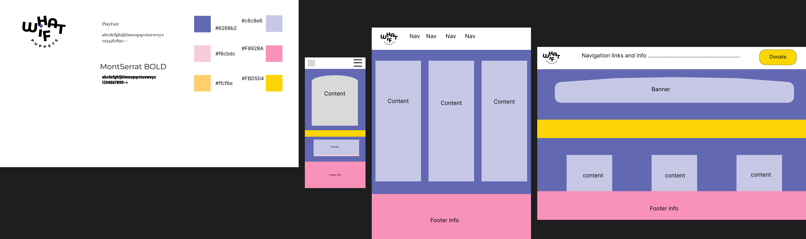
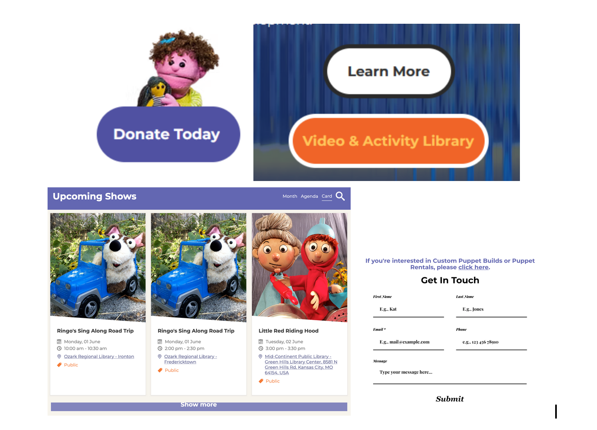

Narrative
The Website does a good job of having a memorable style but not overcomplicating things. The site lacks a mobile view and some key accessibility features, the navigation is solid but lacking. It is confusing in the way it organizes links by groups and has no means of returning to the nav while scrolling through the page.
The branding and design are cohesive with consistent font and color choices. The sire currently lacks responsive features lacking any sort of mobile view and the desktop form not reshaping correctly. The website has relevant content and graphics including videos text and images.
site map

Style guide and prototypes

interface inventory

Design Breif
This redesign attempts to remedy the lack of mobile features for the website aswell as overhaul the functionality of the user features ensuring all buttons work and navigation is clearer. A flexbox layout and media queries will ensure the design is responsive and functional. The site will feature a redo to the forms, navigation and donation page.